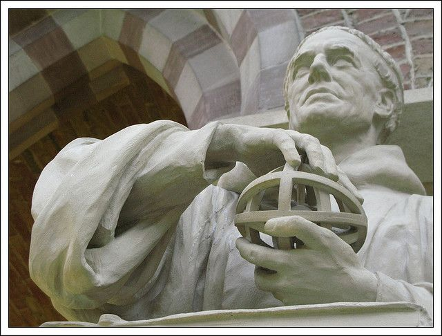

Bacon dived head first into a science career and it is described that he created and designed many experiments. Some scholars believe that he studied and practiced alchemy. Notably, in some of his works he described flying machines and motorized boats. Bacon made strides in optics while doing experiments with geometry, using mirrors and magnifying glasses.
 Roger Bacon
Roger Bacon
